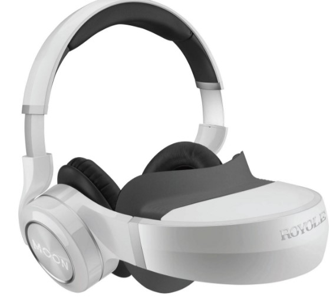

Virtual reality (VR)
Virtual reality has been used more and more, you will see it mostly in the gaming industry, however you
can unsurprisingly also use it for the sports.
If you somehow don't know what VR is, it is a gadget where you have some sort of glasses on your head,
and experience something like you were right at the place where the stuff is happening. Meaning the user
also could use it for sports to have a more fun experience. The user also, has some controls to maybe
play themselves some.

Order product
One of the sports where the VR headset really shines is American football, so have multiple NFL teams
implemented
VR training, to for example have a sharper vision or a better reaction time on an enemy attack.
Sleep Tracking
Sleep tracking is probably as simple as what you were thinking, tracking your sleep.
Athletes always do this as well, to maybe prevent an injury because they were to tired or maybe to even
know if its a good idea to join in on the sport at that moment.
Athletes want to estimate if their reaction time will be at their peak, studies have also proven that
less sleep means that their overall performance decreases by a bit.
The sleep is usually tracked by something as simple as a watch or a wristband. These things have been
developed so much that they can track your different stages of sleep. This is done by tracking your
heart rate and your movements while sleeping.

Order product
Movement Tracking
Movement tracking is just as it says as well, it tracks someones movement. In sports this will be most
of the time the Athletes
This can be used really well, the life of sport coaches has been made a lot easier because of this,
because these people do not have to watch the athlete really well the entire time in the moment.
tracking movement is usually done with computers alongside some devices to catch the movement like a
wearable device or accessoires attached to sporting clothes and other stuff.
When the information gets send to the computer the coaches can easily break down their movement and tell
the athlete what is going well and what can be improved.
Tracking movement can also be used to maybe find stuff that the athlete is doing in a bad way before it
will become a big problem in their life, like maybe they throw the ball in a weird way that can hurt
their muscle in the long run.
So basically this is best used to prevent injuries and signicant downtime before they actually happen

Order product